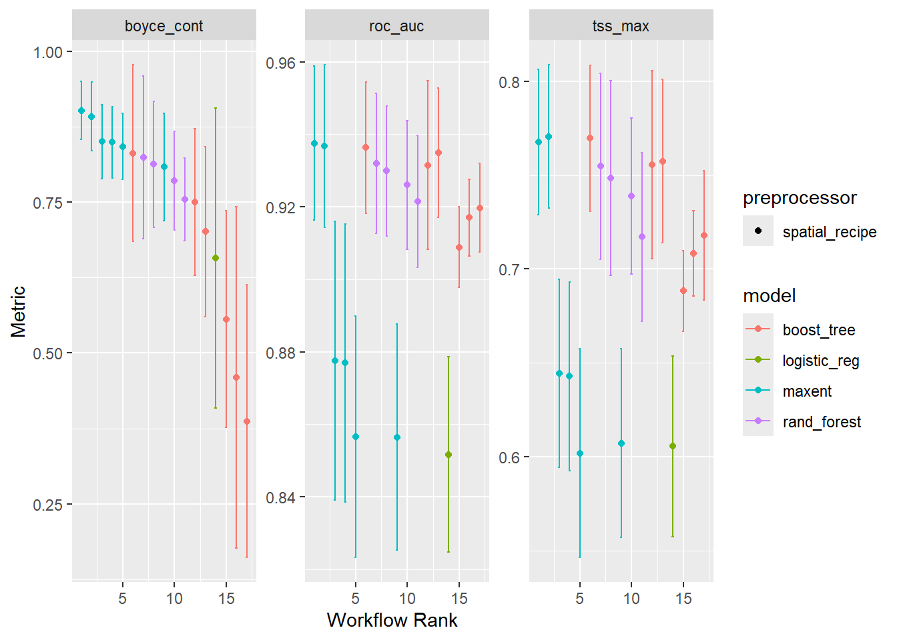
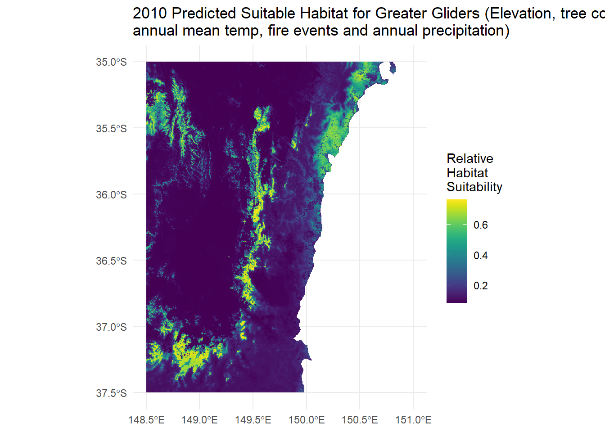

library(galah)
library(tidyverse)
library(tidymodels)
library(tidysdm) # devtools::install_github("EvolEcolGroup/tidysdm")
library(terra)
library(tidyterra)
library(here)
library(sf)
library(ozmaps)
library(elevatr)
library(geodata)
library(stacks)Bushfires are a frequent and natural aspect of Australia’s ecosystems. During 2019 we experienced an exceptionally large and dangerous fire season that impacted X amount of land over Y months. The impact of this fire on native wildlife has been well documented and studied. In this post we will be exploring the impact of these fire events on the Greater Glider (Petauroides volans), an arboreal species of Glider that is coming increasingly under threat from habitat loss and climate change.
To explore this impact we will be developing a species distribution model (SDM) using ALA data, tree cover data, climate data and data released by the NSW government. We will then perform a statistical analysis on this model and explore the impact of extent of fire and timing of fire on Glider Presence. For modelling, we will be developing our SDM using tidymodels, for a more in-depth look at the process of preparing and developing an SDM please check out this other fantastic ALA Labs post:
To begin, we can load some packages.
Downloading Greater Glider Data
First lets prepare all the regional data
# define geographic region
se_nsw_bbox <- tibble(
ymin = -37.5,
ymax = -35,
xmin = 148.5,
xmax = 151
)
# Create a terra extent for modifying the rasters later on
bbox_ext <- terra::ext(
c(se_nsw_bbox[["xmin"]],
se_nsw_bbox[["xmax"]],
se_nsw_bbox[["ymin"]],
se_nsw_bbox[["ymax"]]
))
# Get the outline of Australia
aus <- ozmaps::ozmap_country
# Create an sf object of our bounding box
bbox_sf <- st_as_sf(as.polygons(bbox_ext, crs = "EPSG:4326"))Now lets download Greater Glider records from 2014-2024 inside of our bounding box we created earlier. We will use that 4 year buffer period for either side of the fires to perform our exploration later. We will also add a new column in to later allow us to
Data returned for bounding box:
xmin = 148.5 xmax = 151 ymin = -37.5 ymax = -35
Request for 2944 occurrences placed in queue
Current queue length: 1--Downloadinggalah_config(email = "your-email-here") # Registered ALA email
# Collect all greater glider records in that period for the region we defined
gliders <- galah_call() |>
identify("Petauroides volans") |>
filter(year >= 2014 & year <= 2024) |>
galah_apply_profile(ALA) |>
galah_geolocate(se_nsw_bbox, type = "bbox") |>
atlas_occurrences()
# Classify each glider record as pre or post fire
# Up to and including October 2019 is pre-burnt, all after that are post fire
gliders <- gliders |>
mutate(fire_period = if_else(eventDate <= as.Date("2019-10-31"), "pre_fire", "post_fire"))
# Create an sf object so we can draw it later
gliders_sf <- gliders |>
st_as_sf(coords = c("decimalLongitude", "decimalLatitude")) |>
st_set_crs(4326)Download Elevation Raster
We’re going to be downloading an elevation raster for our defined region, fortunately for us the elevatr package provides us with the handy get_elev_raster function, which we pass in our bounding box from earlier and get elevation data in metres back for our region!
We’re also going to be ensuring our projection is in the coordinates we want, and that the names are sensible. Later we will be resampling and projecting all other rasters to this raster
# Download the base elevation data
elevation_data <- get_elev_raster(locations = bbox_sf, z = 9, prj = "EPSG:4326")Mosaicing & ProjectingNote: Elevation units are in meters.# Remove the ocean elevations as Greater Gliders are not strong swimmers
elevation_aligned <- elevation_data |>
terra::mask(aus)
# elevation_aligned is now a RasterLayer, so lets turn it back into a SpatRaster
elevation_aligned <- terra::rast(elevation_aligned)
# Ensure that it's in our desired projection
elevation_aligned <- terra::project(elevation_aligned, "EPSG:4326")
# Crop it down to our bounding box
elevation_aligned <- terra::crop(elevation_aligned, bbox_ext)
# This column is different everytime, but it's always of the format file<UID>
# So we'll just rename it to elevation for simplicities sake
colname <- names(elevation_aligned)
names(elevation_aligned) <- str_replace_all(names(elevation_aligned),
colname,
"elevation")Download Tree Cover Data
We’re going to be downloading our tree cover data now. We will be stitching together two rasters that cover from central NSW to the east coast. This tree cover data is from 2010
Once we’ve got our tree cover raster files downloaded, we want to modify the layer names to be more representative of the data they contain, we then want to crop to our region and then merge them into one raster file
# Load the raster
tree_cover_rast_150e_2010 <- rast("treecover2010_30S_150E.tif")
# Check the names of the layers in the raster
names(tree_cover_rast_150e_2010)[1] "Layer_1"# In this case we have one layer, and it's titled "Layer_1", which is not very helpful. So we'll change that to a more suitable name
names(tree_cover_rast_150e_2010) <- str_replace_all(names(tree_cover_rast_150e_2010),
"Layer_1",
"treecover")
# See the change has worked
names(tree_cover_rast_150e_2010)[1] "treecover"# Let's repeat the process for the 140E raster
tree_cover_rast_140e_2010 <- rast("treecover2010_30S_140E.tif")
names(tree_cover_rast_140e_2010)[1] "Layer_1"names(tree_cover_rast_140e_2010) <- str_replace_all(names(tree_cover_rast_140e_2010),
"Layer_1",
"treecover")
names(tree_cover_rast_140e_2010)[1] "treecover"# Crop our raster files to our bounding box extent
tree_cover_rast_150e_2010 <- tree_cover_rast_150e_2010 |>
terra::crop(bbox_ext)
tree_cover_rast_140e_2010 <- tree_cover_rast_140e_2010 |>
terra::crop(bbox_ext)
# Merge the two rasters into a single raster
tree_cover_2010 <- merge(tree_cover_rast_140e_2010, tree_cover_rast_150e_2010)
|---------|---------|---------|---------|
=========================================
# We can now safely delete the first two raster files to save memory
rm(tree_cover_rast_140e_2010)
rm(tree_cover_rast_150e_2010)
# Resample our tree cover to the resolution of the elevation data
tree_cover_2010 <- terra::resample(tree_cover_2010, elevation_aligned)Download Climate Rasters
Our model will use climate data from CHELSA. We will be selecting the UKESM1-0-LL SSP3-7.9 modelling for 2011-2040 for simplicity as they provide rasters at a reasonable resolution with the bioclimatic variables we are interested in. We will be selecting 2 bioclimatic variables to include in our model:
- Bio1: Mean Annual Temperature
- Bio12: Mean annual precipitation
# Load our bio1 raster
bio1 <- rast("CHELSA_bio1_2011-2040_ukesm1-0-ll_ssp370_V.2.1.tif")
bio12 <- rast("CHELSA_bio12_2011-2040_ukesm1-0-ll_ssp370_V.2.1.tif")We will now perform similar modifications to our rasters that we did to our tree cover rasters. We will be renaming the layers to something more sensible, cropping down to our bounding box and also masking the rasters against an outline of Australia so we don’t have oceanic data influencing our model (as Gliders are entirely terrestrial!)
# Crop to our bounding box extent
bio1 <- terra::crop(bio1, bbox_ext)
# Mask out the oceans
bio1 <- mask(bio1, aus)Warning: [mask] CRS do not match# Check the name, and replace the horrible large name with something short and sweet
names(bio1)[1] "CHELSA_bio1_2011-2040_ukesm1-0-ll_ssp370_V.2.1"names(bio1) <- str_replace_all(names(bio1),
"CHELSA_bio1_2011-2040_ukesm1-0-ll_ssp370_V.2.1",
"bio1")
# Check to make sure our name is updated properly
names(bio1)[1] "bio1"# Resample our bioclim variable to the resolution of the elevation raster
bio1 <- terra::resample(bio1, elevation_aligned)
# And it's always a good idea to plot a raster to check it's all loaded correctly
plot(bio1)
# Repeat for our BIO12 raster
bio12 <- terra::crop(bio12, bbox_ext)
bio12 <- mask(bio12, aus)Warning: [mask] CRS do not matchnames(bio12)[1] "CHELSA_bio12_2011-2040_ukesm1-0-ll_ssp370_V.2.1"names(bio12) <- str_replace_all(names(bio12),
"CHELSA_bio12_2011-2040_ukesm1-0-ll_ssp370_V.2.1",
"bio12")
names(bio12)[1] "bio12"bio12 <- terra::resample(bio12, elevation_aligned)
plot(bio12)
Download our Fire Extent Raster
We will now need to download our raster for the fire extent for 2019/2020 provided by the NSW Government
Prepare data
Now that we have our occurrence data and environmental data, there are a few steps we’ll complete to prepare our data for modelling. Fire Extent and Severity Mapping (FESM) 2019/20. We will download the FESM v3-data in IMG and TIFF format, then extract the .tif file to our directory. This raster is big so in the interest of time, we will be cropping and reducing it down just to our desired range a little differently to our previous rasters.
The data in this raster are classified into 5 digits. 0 - unburnt 1 - Reserved - a.k.a not used right now in the raster 2 - Low 3 - Moderate 4 - High 5 - Extreme
# Load the raster up. This raster is NOT in EPSG:4326 projection, so we are going to be doing the following steps:
# 1. creating an SpatExtent
# 2. Reprojecting that to the extent of our fire map
# 3. Creating a bounding box of that extent in that projection
# 4. Cropping our fire extent raster in that projection
# 5. Reprojecting the now cropped fire extent raster to the projection we use elsewhere
fire_extent <- rast("cvmsre_NSW_20192020_ag1l0.tif")
# We are going to make our extent a polygon so
bbox_ext_vect <- terra::as.polygons(bbox_ext, crs = "EPSG:4326")
# Reproject the bounding box to the same projection of fire_extent
bbox_ext_vect_proj <- terra::project(bbox_ext_vect, crs(fire_extent))
# Create a bounding box of that
bbox_ext_proj <- terra::ext(bbox_ext_vect_proj)
# Crop fire_extent using the reprojected bbox
fire_extent <- terra::crop(fire_extent, bbox_ext_proj)
|---------|---------|---------|---------|
=========================================
# Reproject our fire extent to EPSG:4326
fire_extent <- terra::project(fire_extent, "EPSG:4326")
|---------|---------|---------|---------|
=========================================
|---------|---------|---------|---------|
=========================================
# Then crop back to align
fire_extent <- terra::crop(fire_extent, bbox_ext)
|---------|---------|---------|---------|
=========================================
# Plot it to make sure we've done it all correctly!
plot(fire_extent)
Similar to our other rasters, we are going to rename the layers for coherence, and then resample the map to be at the same resolution as our elevation raster
names(fire_extent) <- str_replace_all(names(fire_extent),
"Layer_1",
"fire_extent")
# Resample and round
fire_extent <- terra::resample(fire_extent, elevation_aligned)
|---------|---------|---------|---------|
=========================================
fire_extent <- round(fire_extent)
# Mask out the ocean
fire_extent <- fire_extent |>
terra::mask(aus)Warning: [mask] CRS do not matchFinally we are just going to add one more column to our glider observations, which will get the extent of the fire severity for the 2019 Bushfires at the location that glider was recorded at
gliders_sf$burnt <- extract(fire_extent, vect(gliders_sf), ID = FALSE)Building our model
This post won’t go too in-depth on the steps involved with creating an SDM, for that I recommend this ALA Labs Post: An introduction to species distribution modelling using {tidysdm} & {tidymodels} I encourage anyone interested in the finer details of developing a model read that first and then return to this post
First things first, we will develop a combined raster of all the previous rasters we worked with.
combined_rasters <- c(elevation_aligned, bio1, bio12, fire_extent, tree_cover_2010)
# Make sure we have valid values in our columns
summary(combined_rasters)Warning: [summary] used a sample elevation bio1 bio12 fire_extent
Min. :-274.0 Min. : 6.35 Min. : 468.9 Min. :0.00
1st Qu.: 381.0 1st Qu.:11.67 1st Qu.: 697.3 1st Qu.:0.00
Median : 732.0 Median :13.03 Median : 821.7 Median :0.00
Mean : 684.5 Mean :13.15 Mean : 822.5 Mean :1.09
3rd Qu.: 943.0 3rd Qu.:14.48 3rd Qu.: 936.7 3rd Qu.:2.00
Max. :1881.0 Max. :18.35 Max. :1356.8 Max. :5.00
NA's :33158 NA's :32838 NA's :32838 NA's :33120
treecover
Min. : 0.000
1st Qu.: 0.000
Median : 1.363
Mean :29.023
3rd Qu.:70.679
Max. :91.515
We will then thin out our data so that we don’t have multiple glider observations below the level of resolution of our raster.
Pseudo-absences and Accurate Pre/Post-Fire Columns
What we currently have is a list of actual observations, and without true absence records, we will generate a bunch of pseudo-absences based off our combined raster. We will then allocate 50% of the pseudo absence records as being pre-fire and 50% as being post-fire. This is because we don’t have our pre and post fire record as a raster, which is what the sample_pseudoabs function uses to generate the potential pseudo-absences. We will then restore the actual observation pre and post-fire values.
# Generate the pseudoabsence records
gliders_pseudoabs <- tidysdm::sample_pseudoabs(
gliders_thin,
n = 3 * nrow(combined_rasters),
raster = combined_rasters,
method = c("dist_min", km2m(5)))
# Calculate the number of rows so we can generate random categories
n_pseudo <- nrow(gliders_pseudoabs)
# Generate random categories for our pseudoabsences
pseudo_categories <- sample(c("pre_fire", "post_fire"), size = n_pseudo, replace = TRUE)
# Get the real categories from our original data
real_categories <- gliders_thin |>
select(fire_period) |>
mutate(class = "presence")
# Put the pseudo categories into our pseudoabsences
gliders_pseudoabs <- gliders_pseudoabs |>
mutate(fire_period = pseudo_categories)
# Extract the tree cover, elevation values and climate values at the pseudoabs points
gliders_events <- gliders_pseudoabs |>
bind_cols(
terra::extract(combined_rasters,
gliders_pseudoabs,
ID = FALSE))
# Join the real fire_period category from the original records to overwrite our fake ones
gliders_events <- gliders_events |>
st_join(real_categories |> select(fire_period), left = TRUE) |>
mutate(fire_period = coalesce(fire_period.y, fire_period.x)) |> # Overwrite only if match found
select(-fire_period.x, -fire_period.y) # Remove redundant columns
# Check for any NA records and remove them
## TODO: Check if this is still needed and remove if not
sum(is.na(gliders_events))[1] 0gliders_events <- na.omit(gliders_events)
sum(is.na(gliders_events))[1] 0Let’s now have a look at our predictor variables and see how they correlate to one another. Then we will select our predictor variables to filter out all the other records in our data frame. We will then turn our pre/post fire column into a numeric value for our modelling and statitical analysis later
# Plot the effect of each variable on both presence and pseudoabsence records
gliders_events |>
plot_pres_vs_bg(class)
# Look at the names in our data frame and select the winners
names(gliders_events)[1] "class" "geometry" "elevation" "bio1" "bio12"
[6] "fire_extent" "treecover" "fire_period"predictor_vars <- c("elevation", "bio1", "bio12", "fire_extent", "treecover")
# Add in class and fire-period
gliders_filtered <-
gliders_events |>
select(all_of(c(predictor_vars, "class", "fire_period")))
# Change fire period into a numeric value
gliders_filtered <- gliders_filtered |>
mutate(fire_period = if_else(fire_period == "post_fire", 1, -1))
gliders_filtered$fire_period <- as.numeric(gliders_filtered$fire_period)Model
TODO: Come back and expand So now we’re going to actual build up our model
combined_rasters <- combined_rasters[[predictor_vars]]
names(combined_rasters)[1] "elevation" "bio1" "bio12" "fire_extent" "treecover" # set training and testing data
set.seed(100)
# Create training and testing datasets
gliders_split <-
gliders_filtered |>
initial_split()
gliders_split<Training/Testing/Total>
<5885/1962/7847>gliders_train <- training(gliders_split)
gliders_trainSimple feature collection with 5885 features and 7 fields
Geometry type: POINT
Dimension: XY
Bounding box: xmin: 148.5 ymin: -37.49949 xmax: 150.8341 ymax: -35.00099
Geodetic CRS: WGS 84
# A tibble: 5,885 × 8
elevation bio1 bio12 fire_extent treecover class fire_period
<dbl> <dbl> <dbl> <int> <dbl> <fct> <dbl>
1 467 13.5 913. 4 63.4 pseudoabs 1
2 989 10.9 925. 0 86.1 presence 1
3 211 14.6 958. 0 88.5 pseudoabs -1
4 342 14.0 964. 2 55.4 pseudoabs -1
5 1326 9.54 948. 0 74.2 pseudoabs -1
6 928 12.6 548. 0 30.4 pseudoabs 1
7 575 13.8 901. 0 4.67 pseudoabs -1
8 26 16.8 986. 0 0.0194 pseudoabs -1
9 923 12.3 519. 0 3.89 pseudoabs 1
10 40 17.5 1050. 1 83.2 presence 1
# ℹ 5,875 more rows
# ℹ 1 more variable: geometry <POINT [°]>gliders_test <- testing(gliders_split)
gliders_testSimple feature collection with 1962 features and 7 fields
Geometry type: POINT
Dimension: XY
Bounding box: xmin: 148.5 ymin: -37.49949 xmax: 150.8049 ymax: -35.00099
Geodetic CRS: WGS 84
# A tibble: 1,962 × 8
elevation bio1 bio12 fire_extent treecover class fire_period
<dbl> <dbl> <dbl> <int> <dbl> <fct> <dbl>
1 881 12.2 755. 4 80.2 presence 1
2 1158 10.7 857. 0 71.2 presence 1
3 1157 10.5 879. 0 85.0 presence 1
4 815 11.5 1061. 0 90 presence -1
5 994 11.6 788. 3 87.2 presence 1
6 69 16.6 898. 3 82.5 presence 1
7 937 10.9 998. 0 89.0 presence -1
8 1067 10.2 933. 0 87.7 presence -1
9 73 17.5 1134. 1 82.1 presence 1
10 1018 11.6 765. 3 88.5 presence 1
# ℹ 1,952 more rows
# ℹ 1 more variable: geometry <POINT [°]># Perform Cross validation
gliders_cv <- spatial_block_cv(gliders_train, v = 5)Now we’re going to create a new recipe for our model, basically calculating the effect each variable has on presence and absence.
gliders_recipe <- recipe(
gliders_train,
formula = class ~ elevation + bio1 + bio12 + treecover + fire_extent + fire_period
)Warning: No columns were selected in `update_role()`.gliders_recipe── Recipe ──────────────────────────────────────────────────────────────────────── Inputs Number of variables by roleoutcome: 1
predictor: 6And from this we are going to create a set of 4 models and tune them. TODO: Expand this
gliders_models <-
# create the workflow_set
workflow_set(
preproc = list(default = gliders_recipe),
models = list(
glm = sdm_spec_glm(), # the standard glm specs
rf = sdm_spec_rf(), # rf specs with tuning
gbm = sdm_spec_boost_tree(), # boosted tree model (gbm) specs with tuning
maxent = sdm_spec_maxent() # maxent specs with tuning
),
cross = TRUE # make all combinations of preproc and models
) |>
# tweak controls to store information needed later to create the ensemble
option_add(control = control_ensemble_grid())
gliders_models# A workflow set/tibble: 4 × 4
wflow_id info option result
<chr> <list> <list> <list>
1 default_glm <tibble [1 × 4]> <opts[1]> <list [0]>
2 default_rf <tibble [1 × 4]> <opts[1]> <list [0]>
3 default_gbm <tibble [1 × 4]> <opts[1]> <list [0]>
4 default_maxent <tibble [1 × 4]> <opts[1]> <list [0]>set.seed(2345678) # for reproducability
# Tune the model using our cross validation
gliders_models_tune <-
gliders_models |>
workflow_map("tune_grid",
resamples = gliders_cv,
grid = 6, # increase for more iterations
metrics = sdm_metric_set(),
verbose = TRUE,
control = stacks::control_stack_grid()
)Warning: There are existing options that are being modified
default_glm: 'control'
default_rf: 'control'
default_gbm: 'control'
default_maxent: 'control'i No tuning parameters. `fit_resamples()` will be attemptedi 1 of 4 resampling: default_glm✔ 1 of 4 resampling: default_glm (581ms)i 2 of 4 tuning: default_rfi Creating pre-processing data to finalize unknown parameter: mtry✔ 2 of 4 tuning: default_rf (33.6s)i 3 of 4 tuning: default_gbmi Creating pre-processing data to finalize unknown parameter: mtry✔ 3 of 4 tuning: default_gbm (1m 56.9s)i 4 of 4 tuning: default_maxent✔ 4 of 4 tuning: default_maxent (3m 38.2s)gliders_models_tune# A workflow set/tibble: 4 × 4
wflow_id info option result
<chr> <list> <list> <list>
1 default_glm <tibble [1 × 4]> <opts[4]> <rsmp[+]>
2 default_rf <tibble [1 × 4]> <opts[4]> <tune[+]>
3 default_gbm <tibble [1 × 4]> <opts[4]> <tune[+]>
4 default_maxent <tibble [1 × 4]> <opts[4]> <tune[+]>autoplot(gliders_models_tune)
# See Metrics
collect_metrics(gliders_models_tune)# A tibble: 51 × 9
wflow_id .config preproc model .metric .estimator mean n std_err
<chr> <chr> <chr> <chr> <chr> <chr> <dbl> <int> <dbl>
1 default_glm Preprocesso… spatia… logi… boyce_… binary 0.657 5 0.151
2 default_glm Preprocesso… spatia… logi… roc_auc binary 0.852 5 0.0164
3 default_glm Preprocesso… spatia… logi… tss_max binary 0.606 5 0.0293
4 default_rf Preprocesso… spatia… rand… boyce_… binary 0.755 5 0.0418
5 default_rf Preprocesso… spatia… rand… roc_auc binary 0.921 5 0.0111
6 default_rf Preprocesso… spatia… rand… tss_max binary 0.717 5 0.0273
7 default_rf Preprocesso… spatia… rand… boyce_… binary 0.813 5 0.0633
8 default_rf Preprocesso… spatia… rand… roc_auc binary 0.930 5 0.0109
9 default_rf Preprocesso… spatia… rand… tss_max binary 0.749 5 0.0316
10 default_rf Preprocesso… spatia… rand… boyce_… binary 0.785 5 0.0497
# ℹ 41 more rowsset.seed(123456)Because we are using an ensemble of models, we can use stacks to handle them all for us and select the most appropriate models
gliders_stacked <-
stacks() |> # initialize the stack
add_candidates(gliders_models_tune) |> # add candidate members
blend_predictions() |> # determine how to combine their predictions
fit_members() # fit the candidates with nonzero stacking coefficients
gliders_stacked── A stacked ensemble model ─────────────────────────────────────
Out of 17 possible candidate members, the ensemble retained 2.
Penalty: 0.1.
Mixture: 1.
The 2 highest weighted member classes are:# A tibble: 2 × 3
member type weight
<chr> <chr> <dbl>
1 .pred_pseudoabs_default_maxent_1_3 maxent 2.24
2 .pred_pseudoabs_default_gbm_1_3 boost_tree 2.08autoplot(gliders_stacked, type = "weights")
gliders_test_predictions <-
gliders_test %>%
bind_cols(predict(gliders_stacked, .,
type = "prob",
save_pred = TRUE))
gliders_test_predictions |>
sdm_metric_set()(truth = class, .pred_presence)# A tibble: 3 × 3
.metric .estimator .estimate
<chr> <chr> <dbl>
1 boyce_cont binary 0.952
2 roc_auc binary 0.961
3 tss_max binary 0.811# predict class
gliders_test_predictions_class <-
gliders_test %>%
bind_cols(predict(gliders_stacked, .,
type = "class",
save_pred = TRUE))Generating Final Rasters
Now we are going to generate one final raster for us to use. This final raster is going to be a pseudo “fire period raster”. Basically because our model only evaluates the impact of fire_period on the records, we didn’t need a raster of fire_period previously, however because we are producing a final raster, we DO need a raster that we can sample from in order to produce the final raster. TODO: Explain this properly
# Create raster from pseudoabs data
# Cell has 1 for after fire
# Cell has 0 for before fire
presence_raster <- rast(combined_rasters, nlyr = 1)
names(presence_raster) [1] "lyr1"values(presence_raster) <- NA
names(presence_raster) <- str_replace_all(names(presence_raster),
"lyr1",
"fire_period")
gliders_vect <- vect(gliders_filtered)
fire_period_raster <- rasterize(gliders_vect, presence_raster, field = "fire_period", fun = "first")
names(fire_period_raster) <- str_replace_all(names(fire_period_raster),
"first",
"fire_period")
# This is quite hacky
fire_period_raster[is.na(fire_period_raster) & (fire_extent == 0 | fire_extent == 1)] <- -1 # Pre-fire
fire_period_raster[is.na(fire_period_raster) & !(fire_extent == 0 | fire_extent == 1)] <- 1 # Post-fire
#plot(fire_period_raster)
combined_rasters <- c(combined_rasters, fire_period_raster)
#combined_rasters <- combined_rasters[[names(combined_rasters) != "fire_period"]]
names(combined_rasters)[1] "elevation" "bio1" "bio12" "fire_extent" "treecover"
[6] "fire_period"prediction_present <- predict_raster(gliders_stacked,
combined_rasters,
type = "prob",
wopt = list(steps=32))The final plot
We can now produce our final prediction raster TODO: Expand
ggplot() +
geom_spatraster(data = prediction_present,
aes(fill = .pred_presence)) +
scale_fill_whitebox_c(palette = "viridi",
na.value = NA) +
guides(fill = guide_colorbar(title="Relative\nHabitat\nSuitability")) +
labs(title="2010 Predicted Suitable Habitat for Greater Gliders (Elevation, tree cover,\nannual mean temp, fire events and annual precipitation)") +
pilot::theme_pilot(grid="hv") +
theme(
legend.text = element_text(hjust = 0.5)) +
theme_minimal()<SpatRaster> resampled to 500556 cells.
names(gliders)[1] "recordID" "scientificName" "taxonConceptID" "decimalLatitude"
[5] "decimalLongitude" "eventDate" "occurrenceStatus" "dataResourceName"
[9] "fire_period" Statistical Analysis
Now let’s investigate the relative effect that each variable had on the final prediction raster
# Join the prediction raster and our other rasters
final_raster <- c(prediction_present, combined_rasters)
names(final_raster)[1] ".pred_presence" ".pred_pseudoabs" "elevation" "bio1"
[5] "bio12" "fire_extent" "treecover" "fire_period" # Construct a GLM
lm <- glm(.pred_presence ~ elevation + bio1 + bio12 + fire_extent + treecover + fire_period, data = final_raster)
summary(lm)
Call:
glm(formula = .pred_presence ~ elevation + bio1 + bio12 + fire_extent +
treecover + fire_period, data = final_raster)
Coefficients:
Estimate Std. Error t value Pr(>|t|)
(Intercept) -1.049e+00 2.775e-03 -377.87 <2e-16 ***
elevation 3.765e-04 8.690e-07 433.23 <2e-16 ***
bio1 5.660e-02 1.552e-04 364.58 <2e-16 ***
bio12 1.710e-04 5.872e-07 291.29 <2e-16 ***
fire_extent -1.746e-02 1.204e-04 -145.08 <2e-16 ***
treecover 2.373e-03 2.953e-06 803.55 <2e-16 ***
fire_period 1.686e-02 2.403e-04 70.19 <2e-16 ***
---
Signif. codes: 0 '***' 0.001 '**' 0.01 '*' 0.05 '.' 0.1 ' ' 1
(Dispersion parameter for gaussian family taken to be 0.01486055)
Null deviance: 64552 on 2825491 degrees of freedom
Residual deviance: 41988 on 2825485 degrees of freedom
(1391370 observations deleted due to missingness)
AIC: -3874215
Number of Fisher Scoring iterations: 2:::